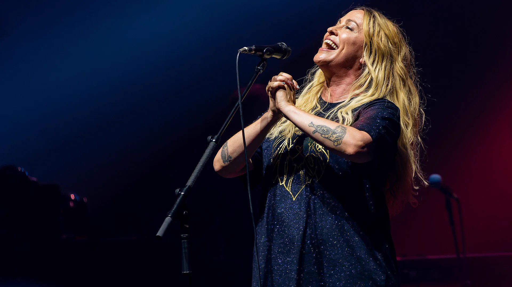
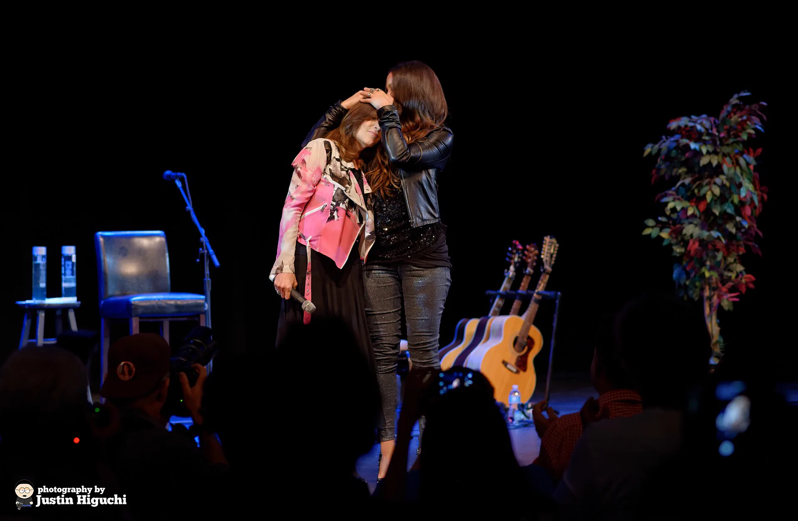

Una experiencia documental interactiva
Alanis
Morissette
Una voz que convirtió la rabia y la vulnerabilidad en una de las obras más importantes del rock moderno.
Foto: Raph_PH · CC BY 2.0
Trayectoria
Una vida en seis décadas
De la chica pop de Ottawa a la voz que redefinió el rock de los noventa y lo sostuvo durante tres décadas. Recorré su historia como quien hojea un documental.
Discografía
El catálogo, año por año
Capítulo aparte
Jagged
Little Pill
En vivo
Sobre el escenario
Del estadio al club íntimo. Su presencia en vivo es tan visceral como sus letras.

Especial
Alanis en
Argentina
Las visitas, una por una
Archivo visual
La fotografía como archivo
Fuentes y créditos
Trazabilidad
Todo el contenido apunta a su fuente: biografía, discografía, conciertos en Argentina y fotografías.